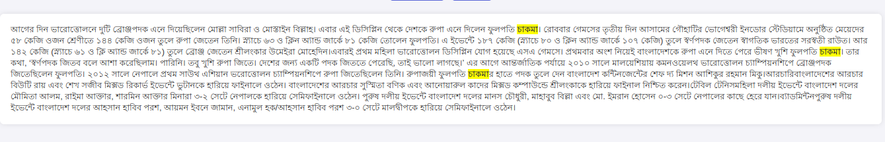
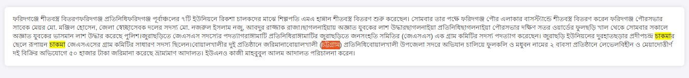
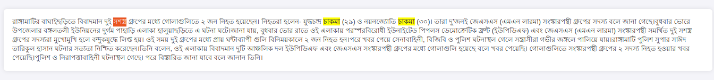

<2024-07-08 সোম>
We can have the following definitions.
[ ] Articles that talks about ethnic people
[X] Article that mention ethnic people in one part with no relation
[ ] Articles that mention ethnic people and IS related to their life in someway.
We consider the first and last kinda articles to be ethnic article. But how do we define "related to their life in some way?".
Cutting off mountains is related to their life. But it might be annotator bias?
Indigenous players who happen to win a competition, those articles are about sports, not ethnic people. Are they ethnic people related article?
I think for third category, it is important to get the annotations with the help of ethnic people.
খাগড়াছড়ি জেলার পানছড়ির নাপিতাপাড়ায় যৌথবাহিনী অভিযান চালিয়ে দুটি অস্ত্র, পাঁচ রাউন্ড তাজা গুলি ও সেনাবাহিনীর পোশাকসহ দুই সন্ত্রাসীকে আটক করেছে। নিরাপত্তাবাহিনীর দাবি, আটকরা ইউপিডিএফ’র সামরিক শাখার কর্মী।পানছড়ি থানার ভারপ্রাপ্ত কর্মকর্তা আব্দুল জব্বার জানান, গোপন খবরের ভিত্তিতে সোমবার গভীর রাতে পানছড়ির নাপিতাপাড়ায় অভিযান চালায় যৌথবাহিনীর সদস্যরা। রাতভর তল্লাশি চালিয়ে প্রমেশ চাকমা (৩৩) ও সোনামনি চাকমা (৩৫) নামের দুই ব্যক্তিকে আটক করা হয়।যৌথবাহিনী এসময় তাদের কাছ থেকে একটি বিদেশী পিস্তল, একটি এলজি, দুই ধরনের পাঁচ রাউন্ড গুলি, ম্যাগজিন ও একসেট সেনাবাহিনীর পোশাক উদ্ধার করা হয়।পানছড়ি থানার ভারপ্রাপ্ত কর্মকর্তা (ওসি) মো. আব্দুল জব্বার ঘটনার সত্যতা নিশ্চিত করে বলেন, আটক ব্যক্তিদের পানছড়ি পুলিশের নিকট হস্তান্তর করা হয়েছে ।
পাহাড়ে তেল-গ্যাস অনুসন্ধান ও উত্তোলন কর্মকাণ্ডে সেখানকার প্রাকৃতিক পরিবেশ বিপর্যয়ের পাশাপাশি ভূমিবিরোধ আরও জটিল হয়ে উঠতে পারে বলে আশংকা প্রকাশ করেছেন পার্বত্য আঞ্চলিক পরিষদ চেয়ারম্যান জ্যোতিরিন্দ্র বোধিপ্রিয় লারমা ওরফে সন্তু লারমা। সোমবার দুপুরে রাঙ্গামাটির পার্বত্য চট্টগ্রাম আঞ্চলিক পরিষদের সভাকক্ষে আয়োজিত এক মতবিনিময় সভায় তিনি এ আশংকার কথা জানান।এ বিষয়ে স্থানীয় জনপ্রতিনিধি ও সুশীল সমাজের প্রতিনিধিদের সঙ্গে মতবিনিময় করেন সন্তু লারমা। এতে অংশ নেন রাঙ্গামাটির সংসদ সদস্য উষাতন তালুকদার, কাপ্তাই উপজেলা চেয়ারম্যার দিলদার হোসেন, রাঙ্গামাটি সদর উপজেলা চেয়ারম্যান অরুণ কান্তি চাকমা, পার্বত্য চট্টগ্রাম নাগরিক কমিটির সভাপতি গৌতম দেওয়ান, খাগড়াছড়ি হেডম্যান অ্যাসোসিয়েশনের সভাপতি শক্তিপদ ত্রিপুরা, আঞ্চলিক পরিষদের সদস্য হাজী কামাল উদ্দিন, রক্তোৎপল ত্রিপুরা, সাবেক যুগ্ম জেলা জজ অ্যাডভোকেট দীপেন দেওয়ান, সাবেক উপসচিব প্রকৃতি রঞ্জন চাকমা প্রমুখ।

Individual and region. 

চট্টগ্রামের বোয়ালখালীতে প্রকাশ্যে অস্ত্র হাতে এলাকা ঘুরে বেড়ানো যুবক বাবুলকে এখনো গ্রেফতার করতে পারেনি পুলিশ। তবে সোমবার রাত ১১টার দিকে পুলিশ তাকে গ্রেফতারের জন্য চরণদ্বীপ এলাকায় অভিযান চালিয়েছেন। পুলিশের উপস্থিতি টের পেয়ে সে গা ঢাকা দিলেও ভোরে আবারও তাকে মসজিদ ঘাট এলাকায় আস্ফালন করে মাহে আলমে বাড়ির সামনে ফাঁকা গুলি ছুড়তে দেখা গেছে বলে জানিয়েছেন এলাকাবাসী।মো. নাছের নামের চরণদ্বীপের এক ব্যবসায়ী বলেন, বাবুল বর্তমানে এলাকায় অবস্থান করলেও তার হাতে পিস্তল থাকায় কেউ তাকে ধরার সাহস করছে না। পুলিশ এলে সে গা ঢাকা দেয়। ভয়ে তারা তটস্থ। তার সন্ত্রাসী কর্মকাণ্ড অতীতের সব রেকর্ড ছাড়িয়ে গেছে। বাবুলের পিতা একজন পানের দোকানদার তার ছেলে কিভাবে এত দামি অস্ত্র পেল? কারা তাকে আশ্রয়-প্রশ্রয় দিচ্ছেন সেটা খতিয়ে দেখা দরকার। সে কখন কি ঘটায় বলা যায় না। চরম নিরাপত্তাহীনতায় রয়েছেন তারা।এলাকাবাসী সূত্রে জানা গেছে, পূর্ব চরণদ্বীপ এলাকার মোজাহের মিয়ার (৭৫) ৭ ছেলে-মেয়ের মধ্যে মো. বাবুল প্রথম সন্তান। এক সময় বাবুল বোয়ালখালী আর এক দুর্ধর্ষ ’তারকা’ সন্ত্রাসী বদি বাহিনীর প্রধান বদির সঙ্গে যোগ দিয়ে অপরাধ জগতে পা বাড়ায়। ২০০৪ সালে রযাবের ক্রসফায়ারে বদি নিহত হলে সে রাঙ্গামাটিতে পালিয়ে যায়। পরে ২০১৪ সালে রাঙ্গামাটিতে হত্যা মামলায় অভিযুক্ত হয়ে বাবুল বোয়ালখালীতে ফিরে এসে নানা অপরাধ কর্মকাণ্ড শুরু করে। এলাকাবাসী আরও জানায়, সে চুরি, ডাকাতি, ছিনতাই, মাদক ব্যবসা ছাড়াও এলাকায় বিভিন্ন আপরাধ কর্মকাণ্ড নিয়ন্ত্রণ করে থাকে। পুলিশ জানায়, ২০০৩ সালের মে মাসে প্রথম তার বিরুদ্ধে বোয়ালখালী থানায় ডাকাতি মামলা হয়। এরপর ২০১৩ সালে মারামারির মামলা ২০১৪ সালে মাদকদ্রব্য নিয়ন্ত্রণ আইনে এবং ২০১৪ সালে রাঙ্গামাটিতে এক চাকমা হত্যার অভিযোগে তার বিরুদ্ধে একটি হত্যা মামলা হয়। একাধিকবার সে পুলিশের হাতে গ্রেফতার হলেও আইনের ফাঁকফোকরে সে বেরিয়ে এসে বেপরোয়া হয়ে ওঠে। সোমবার সকালে বালু ব্যবসার বিরোধকে কেন্দ্র করে বাবুল যুবলীগ নেতা মাহে আলমের ঘর লক্ষ্য করে দুই রাউন্ড গুলি ছুড়েছে এবং পিস্তল ও ছুরি হাতে এলাকায় মহড়া দিয়ে আতংক ছড়িয়েছে। এ ব্যাপারে বোয়ালখালী থানার ভারপ্রাপ্ত কর্মকর্তা সালাহ উদ্দিন চৌধুরী বলেন, বাবুলের বিরুদ্ধে কি ব্যবস্থা নিয়েছে জানতে চাইলে ওসি মিটিংয়ে আছেন বলে সংযোগ কেটে দেন।
The article has nothing to do with ethnic people. It just happens to contain a name.
গৃহকর্মীকে ধর্ষণের অভিযোগে দায়েরকৃত মামলায় ঝালকাঠিতে রোববার জেলার নলছিটি উপজেলা বিএনপির সহসভাপতি ও ব্যবসায়ী কবির জমাদ্দারের বিরুদ্ধে গ্রেফতারি পরোয়ানা জারি হয়েছে। পুলিশ দীর্ঘ তদন্ত শেষে তার বিরুদ্ধে চার্জশিট দাখিল করে।নারী ও শিশু নির্যাতন দমন টাইব্যুনালের বিচারক (জেলা ও দায়রা জজ) রমণীরঞ্জন চাকমা চার্জশিট আমলে নিয়ে গ্রেফতারি পরোয়ানার নির্দেশ দেন। গত বছরের ১৭ জুলাই ধর্ষণের ঘটনাটি ঘটে বলে অভিযোগ এনে মেয়েটি নিজেই বাদী হয়ে মামলাটি দায়ের করে। কবির জমাদ্দার তার বিরুদ্ধে আনা অভিযোগ সত্য নয় বলে দাবি করে আসছেন।
But region is an important bias here. For example, the article contains some names of indigenous people. If its outside of Chittagong, it probably has nothing to do with the life of ethnic people. But if its in that area, it probably has?
Similarly, sports news happen to contain an ethnic player. Do those article represent ethnic article?
Medium: Ethnic articles are articles that creates a perspective about ethnic people in the mind of the reader. Strict: Strongly about ethnic people.